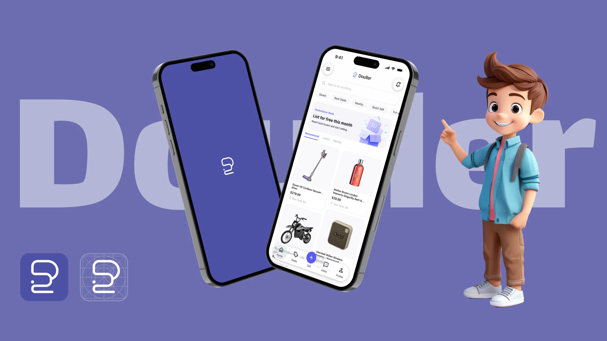
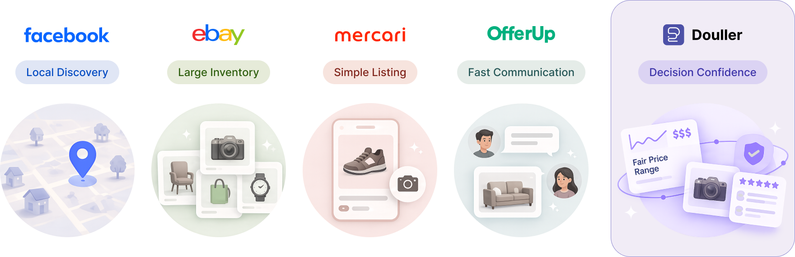
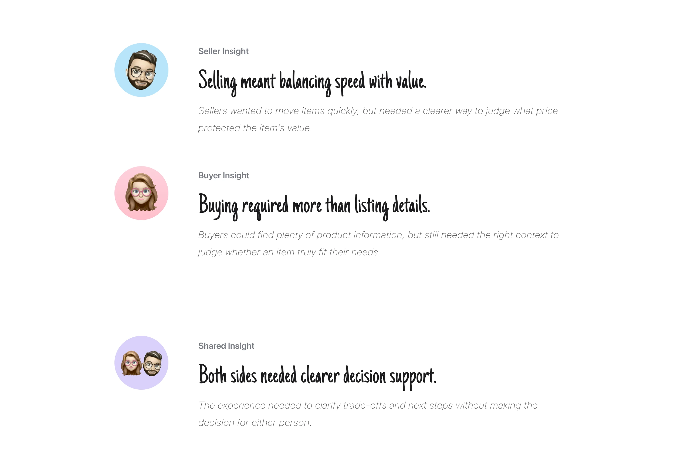
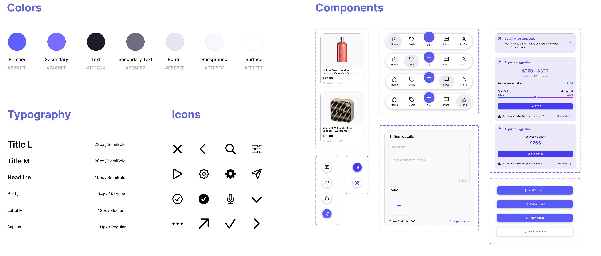
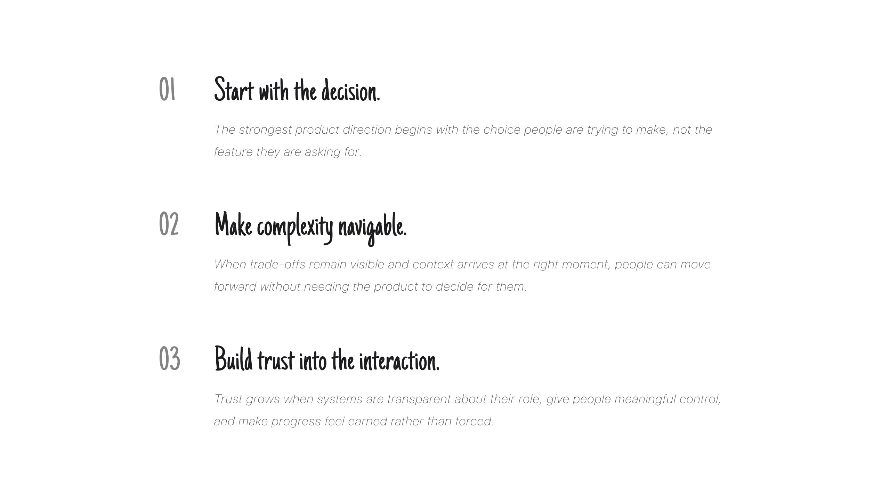

B2C PRODUCT DESIGN · 2024
Dollar Flip
Dollar Flip is an AI-assisted secondhand marketplace designed to make selling and buying feel less uncertain. It helps sellers understand pricing trade-offs and helps buyers surface the questions that matter before they commit.
- Role
- Founding Product Designer
- Scope
- 0→1 Marketplace Experience
- Team
- Founder, Engineering, Data, and Marketing
Opportunity
Decision confidence became the space to compete.
Dollar Flip entered a crowded North American marketplace where discovery, listing speed, and communication were already table stakes. Competing feature for feature would not create a meaningful reason to switch.
The opportunity sat just before action: sellers hesitated over price, while buyers were unsure whether they knew enough to purchase responsibly. The product needed to reduce uncertainty without taking the decision away from them.

Research
Both sides needed confidence before they acted.
I spoke with sellers and buyers, then paired interviews with competitive analysis, prototype testing, and task observation. Sellers balanced speed against value; buyers struggled to tell which details mattered for a specific product.
Across both journeys, the need was not more information or more automation. It was clearer support at the moment a decision had to be made.

Strategy
Make AI clarify the decision.
We reframed Dollar Flip as a marketplace that helps people make better decisions—not one that simply makes transactions faster.
The strategy gave AI a supporting role: make trade-offs understandable, preserve the user’s agency, and offer guidance when uncertainty became actionable.
Strategy 01
Reveal trade-offs.
Make the consequence of each option understandable.
Strategy 02
Preserve agency.
Keep the final judgment with the person making it.
Strategy 03
Guide in context.
Introduce support when uncertainty becomes actionable.
Decision 01
Make the trade-off visible.
Sellers were pulled between two competing outcomes: moving inventory quickly and protecting its value. A single price could make the choice feel simple, but it hid the trade-off and made the system seem more authoritative than helpful. The central question was how to support a pricing decision without taking that decision away from the seller.
Pricing guidance should expose the trade-off.
Goal-based ranges made the consequence of each choice visible while keeping the final price with the seller.
Decision 02
Make room for a better fit.
Buyers could find plenty of listing details, but the first result did not always feel like a fit. When a recommendation missed their context, they had no clear way to explain what was wrong without starting over. The challenge was to preserve what was useful in the first result while making room for the buyer to clarify what was missing.
Guide the question, not the conversation.
The AI Buying Guide surfaces relevant questions in context so buyers can start a more focused conversation without replacing the seller.
Final Design
One marketplace, two clearer paths forward.
The final experience carries the same principle across both journeys: sellers can see the consequences of a pricing choice, while buyers can surface what matters before they commit.
The design system made those AI-assisted moments feel like one coherent product rather than isolated features.
Design System: The system connected pricing guidance, contextual questions, and marketplace states into one reusable interaction language—so AI-assisted support could stay consistent while sellers and buyers remained in control.

Impact
Progress showed up in behavior.
After refinement, sellers could weigh pricing trade-offs with more confidence, while buyers could surface the right questions sooner and move forward with clearer context.
Reflection
Beyond the product.
The work reinforced that strong product design is not about removing uncertainty. It is about making decisions clearer, preserving agency, and building trust into the experience.
